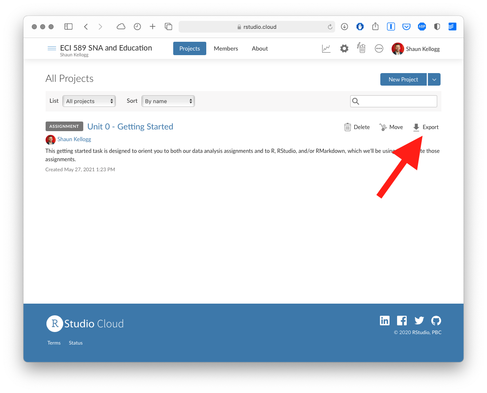
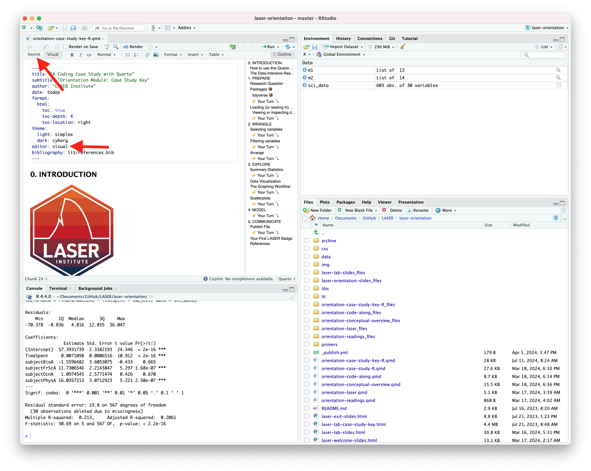
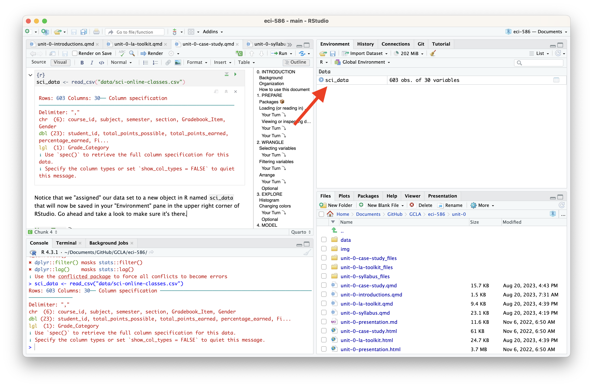
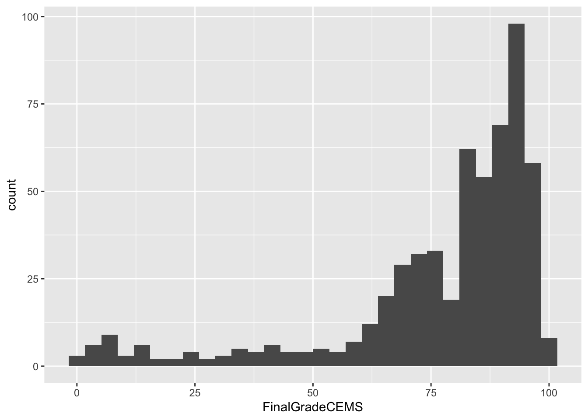
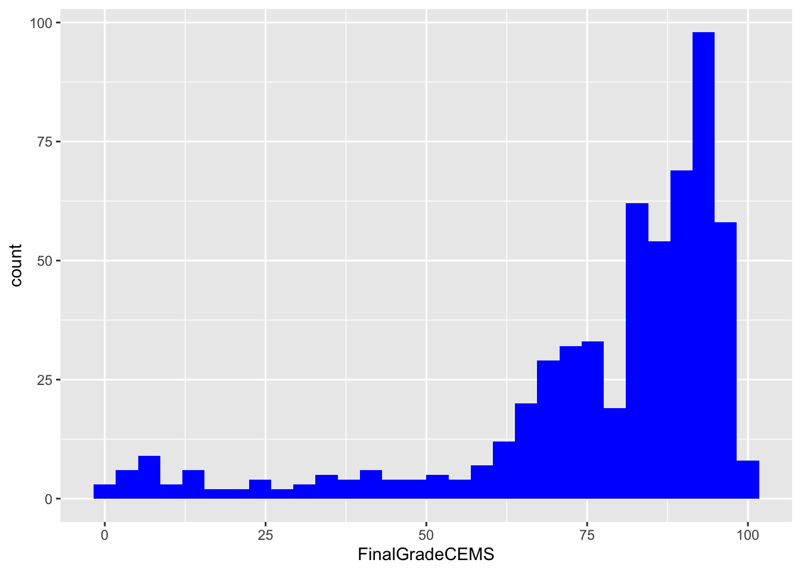
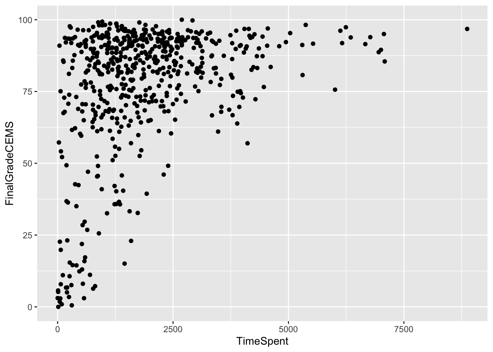
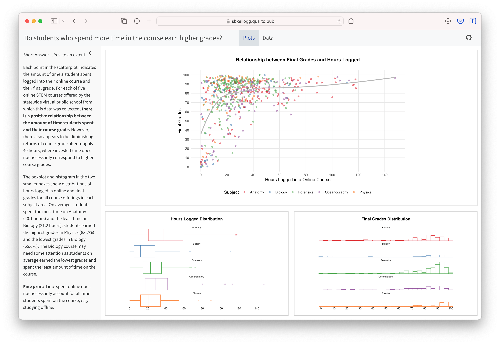
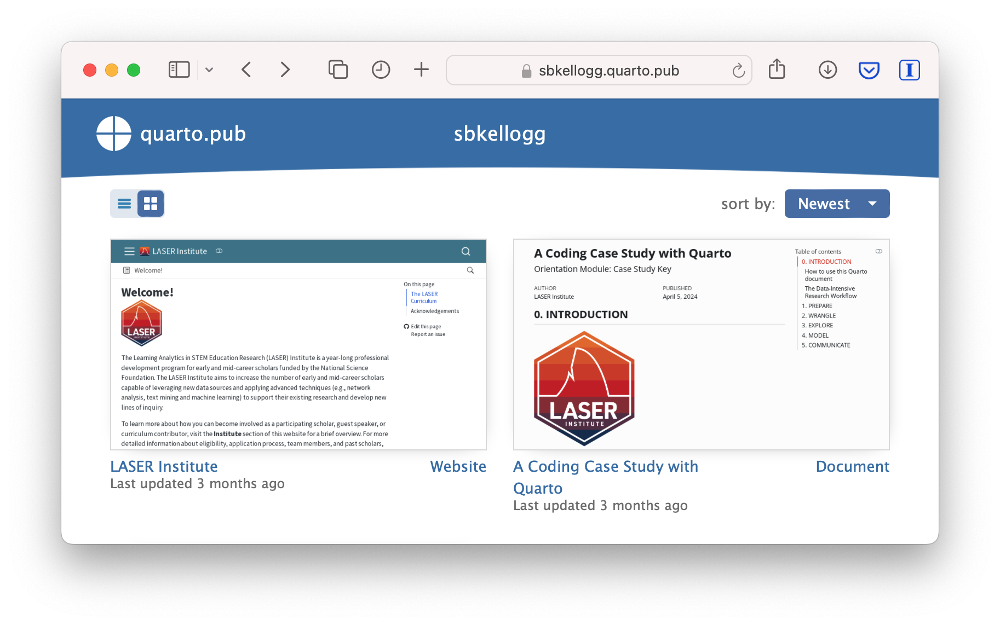
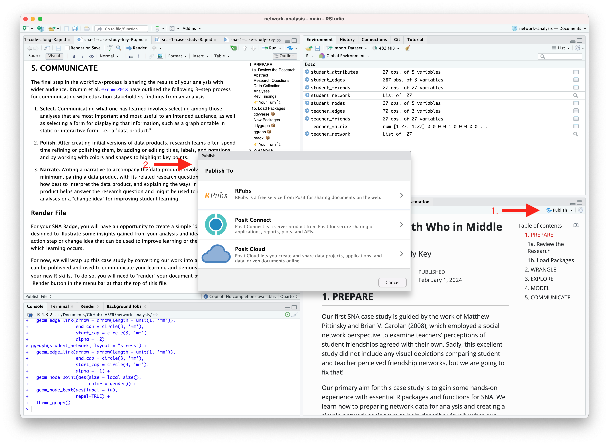
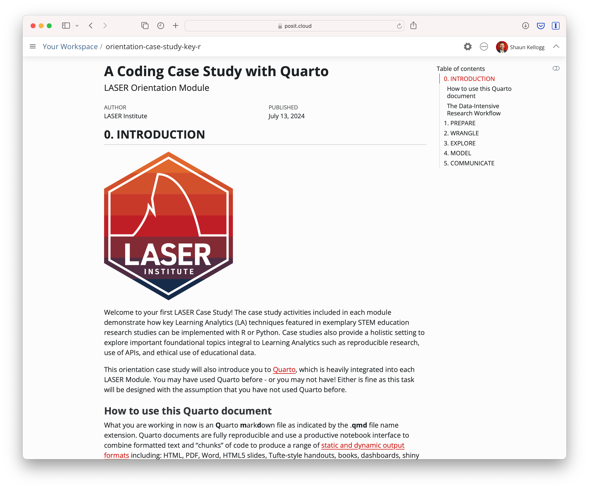

knitr::include_graphics("img/research-workflow.png")
ECI 588: Text Mining in Education
Welcome to using ECI 588: Text Mining in Education! During the third week of each unit, we’ll complete a basic research workflow, or data analysis process, modeled after an actual learning analytics study. This getting started task is designed to orient you to both our data analysis assignments and to R, RStudio, and/or Quarto, which we’ll be using to complete those assignments.
We’ll be using Posit Cloud, which has all of the functionality of the RStudio Desktop, and some additional benefits for the those new to R, such as the pre-installation of packages and the simplification of file directories. If you’re new to R, I highly recommend it.
You are also welcome to use RStudio Desktop, and you can download this project on our course workspace by clicking the “Export” button shown in the following screenshot:

This independent practice is really a warm-up. It is a chance to become familiar with how RStudio works. In the context of doing so, we’ll focus on three things:
What you are working in now is an Quarto markdown file as indicated by the .qmd file name extension. Quarto documents are fully reproducible and use a productive notebook interface to combine formatted text and “chunks” of code to produce a range of static and dynamic output formats including: HTML, PDF, Word, HTML5 slides, Tufte-style handouts, books, dashboards, shiny applications, scientific articles, websites, and more.
Quarto docs can include specially formatted callout boxes like this one to draw special attention to provide notes, tips, cautions, warnings, and important information.
Pro tip: Quarto documents also have a handy Outline feature that allow you to easily navigate the entire document. If the outline is not currently visible, click the Outline button located on the right of the toolbar at the top of this document.
Following best practices for reproducible research (Gandrud 2021), Quarto files store information in plain text markdown syntax. You are currently viewing this Quarto document using the visual editor, The visual editor is set as the default view in the Quarto YAML header at the top of this document. Basically, a YAML header is:
a short blob of text that… not only dictates the final file format, but a style and feel for our final document.
The visual editor allows you to view formatted headers, text and code chunks and is a bit more “human readable” than markdown syntax but there will be many occasions where you will want to take a look at the plain text source code underlying this document. This can be viewed at any point by switching to source mode for editing. You can toggle back and forth between these two modes by clicking on Source and Visual in the editor toolbar.
You may have noticed a special kind of link in the text above. Specifically, a link citing Reproducible Research with R and R Studio by Chris Gandrud. The YAML header includes a bibliography option and points to our reference.bib file in the lit folder of this project, which produces a nice tooltip for linked references and a bibliography when our doc is rendered and published. Click the following link to learn more about citations in Quarto.
Learning Analytics case studies include many interactive elements in which you are asked to perform an action, answer some questions, or write some code. These are indicated by the 👉 Your Turn ⤵ header. Now it’s your turn to do something.
Take a look at the markdown syntax used to create this document by viewing with the source editor. To do so, click the “Source” button in the toolbar at the top of this file. After you’ve had a look, click back to the visual editor to continue.

Great job! Let’s continue!
In addition to including formatted text hyperlinks, and embedded images like above, Quarto documents can also include a specially formatted text box called a “code chunk.” These chunks allows you to run code from multiple languages including R, Python, and SQL. For example, the code chunk below is intended to run R code as specified by “r” inside the curly brackets {}. It also contains a contains a code “comment” as indicted by the # hashtag and line of R code. You may have also noticed a set of buttons in the upper right corner of the code chunk which are used to execute the code.
You may have noticed a set of buttons in the upper right corner for running the code. Click the green arrow  icon on the right side of the code chunk to run the R code and view the image file name
icon on the right side of the code chunk to run the R code and view the image file name research-workflow.png stored in the img folder in your files pane. Quarto will execute the code and its output and any related messages are displayed below the chunk.
knitr::include_graphics("img/research-workflow.png")
Nice work! For this case study, don’t stress too much about understanding the code. We’ll spend a lot of time doing that in the other modules. For now, take a look at the image displayed and answer the question that follows by typing your response directly in this document.
In case studies, you will often see as part of “Your Turns” a prompt to answer a question. Type your response to the following question by deleting “YOUR RESPONSE HERE” and adding your own response:
What do you think this image is intended to illustrate?
You may have noticed that the words in this diagram correspond to the sections outlined at the beginning of this document. These terms, or processes, are part of a framework called the data-intensive research workflow and comes from the book Learning Analytics Goes to School (Krumm, Means, and Bienkowski 2018). You can check that out (literally, it’s available online through the NCSU Library), but don’t feel any need to dive deep for now - we’ll be spending more time on this process throughout the course. For now, know that this document and our unit case studies are organized around these five components of the Data-Intensive Research Workflow.
Now, let’s get started!
First and foremost, data-intensive research involves defining and refining a research question and developing an understanding of where your data comes from (Krumm, Means, and Bienkowski 2018). This part of the process also involves setting up a reproducible research environment (Gandrud 2021) so your work can be understood and replicated by other researchers or analysts. For now, we’ll focus on just a few parts of this process, diving in much more deeply into these components in later learning labs.
In this getting started case study, we’ll be working with data come from an unpublished research study, which utilized a number of different data sources to understand high school students’ motivation within the context of online courses. For the purpose of this case study, our analysis will be driven by the following research question:
Is there a relationship between the time students spend on a course (as measured through their learning management system) and their final course grade?
As highlighted in Chapter 6 of Data Science in Education Using R (Estrellado et al. 2020), one of the first steps of every workflow should be to set up a “Project” within RStudio.
A Project is the home for all of the files, images, reports, and code that are used in any given project.
We are working in Posit Cloud with an R project cloned from GitHub, so a project has already been set up for you as indicated by the .Rproj file in the main directory. Locate the Files tab lower right hand window pane and see if you can find the file named laser-orientation.Rproj.
Since a project already set up for us, we will instead focus on loading the required packages we’ll need for analysis.
Packages, sometimes referred to as libraries, are shareable collections of R code that can contain functions, data, and/or documentation and extend the functionality of R.
You can always check to see which packages have already been installed and loaded into RStudio by looking at the Packages tab in the same pane as the Files tab. Click the packages tab to see which packages have already been installed for this project.

One package that we’ll be using extensively in our learning labs is the {tidyverse} package. The {tidyverse} is actually a collection of R packages designed for wrangling and exploring data (sound familiar?) and which all share an underlying design philosophy, grammar, and data structures. These shared features are sometimes referred to as “tidy data principles” (Wickham and Grolemund 2016).
Before we can begin using these packages, we will need to install them using the install.packages() function built into R.
Click the green arrow in the right corner of the block-or “chunk”-of code that follows and see if you can identify which packages have been installed in the console below.
install.packages("tidyverse")Once these packages have been installed, we will need to load them using the library() function in order to use the handy functions they contain.
To load the tidyverse, click the green arrow in the right corner of the block-or “chunk”-of code that follows. Notice that we do not need to use the quotation marks again because the {tidyverse} package and packages it contains are now a part of our package library!
library(tidyverse)── Attaching core tidyverse packages ──────────────────────── tidyverse 2.0.0 ──
✔ dplyr 1.1.4 ✔ readr 2.1.5
✔ forcats 1.0.0 ✔ stringr 1.5.1
✔ ggplot2 3.5.1 ✔ tibble 3.2.1
✔ lubridate 1.9.4 ✔ tidyr 1.3.1
✔ purrr 1.0.2
── Conflicts ────────────────────────────────────────── tidyverse_conflicts() ──
✖ dplyr::filter() masks stats::filter()
✖ dplyr::lag() masks stats::lag()
ℹ Use the conflicted package (<http://conflicted.r-lib.org/>) to force all conflicts to become errorsPlease do not worry if you saw a number of messages. Those probably mean that the tidyverse loaded just fine. If you see an error, though, try to interpret or search via your search engine the contents of the error, or reach out to us for assistance.
As we noted in the beginning, these case studies are meant to be interactive. Throughout each case study, you’ll see Your Turn headings like the one above that will ask to you apply some of your R skills to help with the analysis. These Your Turns are intended to help you practice newly introduced functions or R code and reinforce R skills you have already learned.
Complete the code chunk below to load the {skimr} package into our environment as well. Skimr is a handy package that provides summary statistics that you can skim quickly to understand your data. We’ll be using this later in the Explore section of this case study.
# load the {skimr} package below
library(skimr)The data we’ll explore in this case study were originally collected for a unpublished research study and utilized a number of different data sources to understand students’ course-related motivation. These courses were designed and taught by instructors through a state-wide online course provider designed to supplement—but not replace—students’ enrollment in their local school.
The data used in this case study has already been “wrangled” quite a bit, but the original datasets included:
A self-report survey assessing three aspects of students’ motivation
Log-trace data, such as data output from the learning management system (LMS)
Discussion board data
Academic achievement data
If you are interested in learning more about these datasets, you can visit Chapter 7 of the excellent book, Data Science in Education Using R(Estrellado et al. 2020).
Next, we’ll load data - specifically, a CSV file, the kind that you can export from Microsoft Excel or Google Sheets - into R, using the read_csv() function in the next chunk.
Again, clicking the green arrow runs the code; do that next.
sci_data <- read_csv("data/sci-online-classes.csv")Rows: 603 Columns: 30
── Column specification ────────────────────────────────────────────────────────
Delimiter: ","
chr (6): course_id, subject, semester, section, Gradebook_Item, Gender
dbl (23): student_id, total_points_possible, total_points_earned, percentage...
lgl (1): Grade_Category
ℹ Use `spec()` to retrieve the full column specification for this data.
ℹ Specify the column types or set `show_col_types = FALSE` to quiet this message.Notice that we “assigned” our data set to a new object in R named sci_data that will now be saved in your “Environment” pane in the upper right corner of RStudio. Go ahead and take a look to make sure it’s there.

Why do you think we included data/ before our sci-online-classes.csv file? Why quotation marks?
Add your responses after the dashes below:
Hint: check the files pane in the lower right corner of RStudio.
Last, let’s check that the code worked as we intended; run the next chunk and look at the results, tabbing left or right with the arrows, or scanning through the rows by clicking the numbers at the bottom of the pane with the print-out of the data you loaded:
sci_data# A tibble: 603 × 30
student_id course_id total_points_possible total_points_earned
<dbl> <chr> <dbl> <dbl>
1 43146 FrScA-S216-02 3280 2220
2 44638 OcnA-S116-01 3531 2672
3 47448 FrScA-S216-01 2870 1897
4 47979 OcnA-S216-01 4562 3090
5 48797 PhysA-S116-01 2207 1910
6 51943 FrScA-S216-03 4208 3596
7 52326 AnPhA-S216-01 4325 2255
8 52446 PhysA-S116-01 2086 1719
9 53447 FrScA-S116-01 4655 3149
10 53475 FrScA-S116-02 1710 1402
# ℹ 593 more rows
# ℹ 26 more variables: percentage_earned <dbl>, subject <chr>, semester <chr>,
# section <chr>, Gradebook_Item <chr>, Grade_Category <lgl>,
# FinalGradeCEMS <dbl>, Points_Possible <dbl>, Points_Earned <dbl>,
# Gender <chr>, q1 <dbl>, q2 <dbl>, q3 <dbl>, q4 <dbl>, q5 <dbl>, q6 <dbl>,
# q7 <dbl>, q8 <dbl>, q9 <dbl>, q10 <dbl>, TimeSpent <dbl>,
# TimeSpent_hours <dbl>, TimeSpent_std <dbl>, int <dbl>, pc <dbl>, uv <dbl>What do you notice about this dataset? What do you wonder? Add one or two thoughts after the dash below:
There are other ways to inspect your data; the glimpse() function provides one such way. Run the code below to take a glimpse at your data.
glimpse(sci_data)Rows: 603
Columns: 30
$ student_id <dbl> 43146, 44638, 47448, 47979, 48797, 51943, 52326,…
$ course_id <chr> "FrScA-S216-02", "OcnA-S116-01", "FrScA-S216-01"…
$ total_points_possible <dbl> 3280, 3531, 2870, 4562, 2207, 4208, 4325, 2086, …
$ total_points_earned <dbl> 2220, 2672, 1897, 3090, 1910, 3596, 2255, 1719, …
$ percentage_earned <dbl> 0.6768293, 0.7567261, 0.6609756, 0.6773345, 0.86…
$ subject <chr> "FrScA", "OcnA", "FrScA", "OcnA", "PhysA", "FrSc…
$ semester <chr> "S216", "S116", "S216", "S216", "S116", "S216", …
$ section <chr> "02", "01", "01", "01", "01", "03", "01", "01", …
$ Gradebook_Item <chr> "POINTS EARNED & TOTAL COURSE POINTS", "ATTEMPTE…
$ Grade_Category <lgl> NA, NA, NA, NA, NA, NA, NA, NA, NA, NA, NA, NA, …
$ FinalGradeCEMS <dbl> 93.45372, 81.70184, 88.48758, 81.85260, 84.00000…
$ Points_Possible <dbl> 5, 10, 10, 5, 438, 5, 10, 10, 443, 5, 12, 10, 5,…
$ Points_Earned <dbl> NA, 10.00, NA, 4.00, 399.00, NA, NA, 10.00, 425.…
$ Gender <chr> "M", "F", "M", "M", "F", "F", "M", "F", "F", "M"…
$ q1 <dbl> 5, 4, 5, 5, 4, NA, 5, 3, 4, NA, NA, 4, 3, 5, NA,…
$ q2 <dbl> 4, 4, 4, 5, 3, NA, 5, 3, 3, NA, NA, 5, 3, 3, NA,…
$ q3 <dbl> 4, 3, 4, 3, 3, NA, 3, 3, 3, NA, NA, 3, 3, 5, NA,…
$ q4 <dbl> 5, 4, 5, 5, 4, NA, 5, 3, 4, NA, NA, 5, 3, 5, NA,…
$ q5 <dbl> 5, 4, 5, 5, 4, NA, 5, 3, 4, NA, NA, 5, 4, 5, NA,…
$ q6 <dbl> 5, 4, 4, 5, 4, NA, 5, 4, 3, NA, NA, 5, 3, 5, NA,…
$ q7 <dbl> 5, 4, 4, 4, 4, NA, 4, 3, 3, NA, NA, 5, 3, 5, NA,…
$ q8 <dbl> 5, 5, 5, 5, 4, NA, 5, 3, 4, NA, NA, 4, 3, 5, NA,…
$ q9 <dbl> 4, 4, 3, 5, NA, NA, 5, 3, 2, NA, NA, 5, 2, 2, NA…
$ q10 <dbl> 5, 4, 5, 5, 3, NA, 5, 3, 5, NA, NA, 4, 4, 5, NA,…
$ TimeSpent <dbl> 1555.1667, 1382.7001, 860.4335, 1598.6166, 1481.…
$ TimeSpent_hours <dbl> 25.91944500, 23.04500167, 14.34055833, 26.643610…
$ TimeSpent_std <dbl> -0.18051496, -0.30780313, -0.69325954, -0.148446…
$ int <dbl> 5.0, 4.2, 5.0, 5.0, 3.8, 4.6, 5.0, 3.0, 4.2, NA,…
$ pc <dbl> 4.50, 3.50, 4.00, 3.50, 3.50, 4.00, 3.50, 3.00, …
$ uv <dbl> 4.333333, 4.000000, 3.666667, 5.000000, 3.500000…Generally, rows typically represent “cases,” the units that we measure, or the units on which we collect data. What counts as a “case” (and therefore what is represented as a row) varies by (and within) fields. There may be multiple types or levels of units studied in your field; listing more than one is fine! Also, please consider what columns - which usually represent variables - represent in your area of work and/or research.
How many “cases” or observations are in this data set?
Pick two columns (or more) and write what you think it represents:
Next, we’ll use a few functions that are handy for preparing data in table form.
By wrangle, we refer to the process of cleaning and processing data, and, in some cases, merging (or joining) data from multiple sources. Often, this part of the process is very (surprisingly) time-intensive! Wrangling your data into shape can itself be an important accomplishment! And documenting your code using R scripts or Markdown files will save yourself and others a great deal of time wrangling data in the future! There are great tools in R for data wrangling, especially through the use of the {dplyr} R package which is part of the tidyverse.
Recall from our Prepare section that we are interested the relationship between the time students spend on a course and their final course grade.
Let’s practice selecting a few variables by introducing a very powerful |> operator called a pipe. Pipes are a powerful tool for combining a sequence of functions or processes.
Run the following code chunk to “pipe” our sci_data to the select() function include the following two variables as arguments:
FinalGradeCEMS (i.e., students’ final grades on a 0-100 point scale)
TimeSpent (i.e., the number of minutes they spent in the course’s learning management system)
sci_data |>
select(FinalGradeCEMS, TimeSpent)# A tibble: 603 × 2
FinalGradeCEMS TimeSpent
<dbl> <dbl>
1 93.5 1555.
2 81.7 1383.
3 88.5 860.
4 81.9 1599.
5 84 1482.
6 NA 3.45
7 83.6 1322.
8 97.8 1390.
9 96.1 1479.
10 NA NA
# ℹ 593 more rowsNotice how the number of columns (variables) is now different!
Let’s include one additional variable in the select function that you think might be a predictor of students’ final course grade or useful in addressing our research question.
First, we need to figure out what variables exist in our dataset (or be reminded of this - it’s very common in R to be continually checking and inspecting your data)!
In addition to glimpse() function, you can use a function named View() to do this. Try it out and see what happens!
View(sci_data)In the code chunk below, add a new variable, being careful to type the new variable name as it appears in the data. We’ve added some code to get you started. Consider how the names of the other variables are separated as you think about how to add an additional variable to this code.
sci_data |>
select(FinalGradeCEMS, TimeSpent)# A tibble: 603 × 2
FinalGradeCEMS TimeSpent
<dbl> <dbl>
1 93.5 1555.
2 81.7 1383.
3 88.5 860.
4 81.9 1599.
5 84 1482.
6 NA 3.45
7 83.6 1322.
8 97.8 1390.
9 96.1 1479.
10 NA NA
# ℹ 593 more rowsOnce added, the output should be different than in the code above - there should now be an additional variable included in the print-out.
A quick footnote about pipes: The original pipe operator, %>%, comes from the {magrittr} package but all packages in the tidyverse load %>% for you automatically, so you don’t usually load magrittr explicitly. The pipe has become such a useful and much used operator in R that it is now baked into R using the new and simpler native pipe |> operator. You can use both fairly interchangeably but there are a few differences between pipe operators.
Next, let’s explore filtering variables. Check out and run the next chunk of code, imagining that we wish to filter our data to view only the rows associated with students who earned a final grade (as a percentage) of 70 - 70% - or higher.
sci_data |>
filter(FinalGradeCEMS > 70)# A tibble: 438 × 30
student_id course_id total_points_possible total_points_earned
<dbl> <chr> <dbl> <dbl>
1 43146 FrScA-S216-02 3280 2220
2 44638 OcnA-S116-01 3531 2672
3 47448 FrScA-S216-01 2870 1897
4 47979 OcnA-S216-01 4562 3090
5 48797 PhysA-S116-01 2207 1910
6 52326 AnPhA-S216-01 4325 2255
7 52446 PhysA-S116-01 2086 1719
8 53447 FrScA-S116-01 4655 3149
9 53475 FrScA-S216-01 1209 977
10 54066 OcnA-S116-01 4641 3429
# ℹ 428 more rows
# ℹ 26 more variables: percentage_earned <dbl>, subject <chr>, semester <chr>,
# section <chr>, Gradebook_Item <chr>, Grade_Category <lgl>,
# FinalGradeCEMS <dbl>, Points_Possible <dbl>, Points_Earned <dbl>,
# Gender <chr>, q1 <dbl>, q2 <dbl>, q3 <dbl>, q4 <dbl>, q5 <dbl>, q6 <dbl>,
# q7 <dbl>, q8 <dbl>, q9 <dbl>, q10 <dbl>, TimeSpent <dbl>,
# TimeSpent_hours <dbl>, TimeSpent_std <dbl>, int <dbl>, pc <dbl>, uv <dbl>In the next code chunk, change the cut-off from 70% to some other value - larger or smaller (maybe much larger or smaller - feel free to play around with the code a bit!).
sci_data |>
filter(FinalGradeCEMS > 70)# A tibble: 438 × 30
student_id course_id total_points_possible total_points_earned
<dbl> <chr> <dbl> <dbl>
1 43146 FrScA-S216-02 3280 2220
2 44638 OcnA-S116-01 3531 2672
3 47448 FrScA-S216-01 2870 1897
4 47979 OcnA-S216-01 4562 3090
5 48797 PhysA-S116-01 2207 1910
6 52326 AnPhA-S216-01 4325 2255
7 52446 PhysA-S116-01 2086 1719
8 53447 FrScA-S116-01 4655 3149
9 53475 FrScA-S216-01 1209 977
10 54066 OcnA-S116-01 4641 3429
# ℹ 428 more rows
# ℹ 26 more variables: percentage_earned <dbl>, subject <chr>, semester <chr>,
# section <chr>, Gradebook_Item <chr>, Grade_Category <lgl>,
# FinalGradeCEMS <dbl>, Points_Possible <dbl>, Points_Earned <dbl>,
# Gender <chr>, q1 <dbl>, q2 <dbl>, q3 <dbl>, q4 <dbl>, q5 <dbl>, q6 <dbl>,
# q7 <dbl>, q8 <dbl>, q9 <dbl>, q10 <dbl>, TimeSpent <dbl>,
# TimeSpent_hours <dbl>, TimeSpent_std <dbl>, int <dbl>, pc <dbl>, uv <dbl>What happens when you change the cut-off from 70 to something else? Add a thought (or more):
The last function we’ll use for preparing tables is arrange. We’ll again use the |> to combine this arrange() function with a function we used already - select(). We do this so we can view only time spent and final grades.
sci_data |>
select(FinalGradeCEMS, TimeSpent) |>
arrange(FinalGradeCEMS)# A tibble: 603 × 2
FinalGradeCEMS TimeSpent
<dbl> <dbl>
1 0 13.9
2 0.535 306.
3 0.903 88.5
4 1.80 44.7
5 2.93 57.7
6 3.01 571.
7 3.06 0.7
8 3.43 245.
9 5.04 202.
10 5.2 11.0
# ℹ 593 more rowsNote that arrange works by sorting values in ascending order (from lowest to highest); you can change this by using the desc() function as an argument with arrange, like the following:
sci_data |>
select(FinalGradeCEMS, TimeSpent) |>
arrange(desc(FinalGradeCEMS))# A tibble: 603 × 2
FinalGradeCEMS TimeSpent
<dbl> <dbl>
1 100 2689.
2 99.8 2921.
3 99.3 965.
4 99.1 879.
5 99.0 1770.
6 98.6 1138.
7 98.6 1270.
8 98.6 1273.
9 98.2 1902.
10 98.2 5373.
# ℹ 593 more rowsJust at a quick cursory glance at our two variables, it does appear that students with higher grades also tend to have spent more time in the online course.
In the code chunk below, replace FinalGradeCEMS that is used with both the select() and arrange() functions with a different variable in the data set. Consider returning to the code chunk above in which you glimpsed at the names of all of the variables.
sci_data |>
select(TimeSpent, FinalGradeCEMS) |>
arrange(desc(FinalGradeCEMS))# A tibble: 603 × 2
TimeSpent FinalGradeCEMS
<dbl> <dbl>
1 2689. 100
2 2921. 99.8
3 965. 99.3
4 879. 99.1
5 1770. 99.0
6 1138. 98.6
7 1270. 98.6
8 1273. 98.6
9 1902. 98.2
10 5373. 98.2
# ℹ 593 more rowsExploratory data analysis, or exploring your data, involves processes of describing your data (such as by calculating the means and standard deviations of numeric variables, or counting the frequency of categorical variables) and, often, visualizing your data. As we’ll learn in later case studies, the explore phase can also involve the process of “feature engineering,” or creating new variables within a dataset (Krumm, Means, and Bienkowski 2018).
In this section, we’ll quickly pull together some basic stats using a handy function from the {skimr} package, and introduce you to a basic data visualization “code template” for the {ggplot} package from the tidyverse.
Let’s repurpose what we learned from our wrangle section to select just a few variables and quickly gather some descriptive stats using the skim() function from the {skimr} package.
sci_data |>
select(TimeSpent, FinalGradeCEMS) |>
skim()| Name | select(sci_data, TimeSpen… |
| Number of rows | 603 |
| Number of columns | 2 |
| _______________________ | |
| Column type frequency: | |
| numeric | 2 |
| ________________________ | |
| Group variables | None |
Variable type: numeric
| skim_variable | n_missing | complete_rate | mean | sd | p0 | p25 | p50 | p75 | p100 | hist |
|---|---|---|---|---|---|---|---|---|---|---|
| TimeSpent | 5 | 0.99 | 1799.75 | 1354.93 | 0.45 | 851.90 | 1550.91 | 2426.09 | 8870.88 | ▇▅▁▁▁ |
| FinalGradeCEMS | 30 | 0.95 | 77.20 | 22.23 | 0.00 | 71.25 | 84.57 | 92.10 | 100.00 | ▁▁▁▃▇ |
Copy the code from the chunk from above and use it as a template to explore some other variables of interest from our sci_data.
# use skim() to summarize other variables of your choosingWhat happens if simply feed the skim function the entire sci_data object? Give it a try!
# use skim() on the entire data frameData visualization is an extremely common practice in Learning Analytics, especially in the use of data dashboards. Data visualization involves graphically representing one or more variables with the goal of discovering patterns in data. These patterns may help us to answer research questions or generate new questions about our data, to discover relationships between and among variables, and to create or select features for data modeling.
In this section we’ll focus on using a basic code template for the {ggplot2} package from the tidyverse. ggplot2 is a system for declaratively creating graphics, based on the grammar of graphics (Wickham 2016). You provide the data, tell ggplot2 how to map variables to aesthetics, what graphical elements to use, and it takes care of the details.
At it’s core, you can create some very simple but attractive graphs with just a couple lines of code. {ggplot2} follows the common workflow for making graphs. To make a graph, you simply:
Start the graph with ggplot() and include your data as an argument;
“Add” elements to the graph using the + operator a geom_() function;
Select variables to graph on each axis with the aes() argument.
Let’s give it a try by creating a simple histogram of our FinalGradeCEMS variable. The code below creates a histogram, or a distribution of the values, in this case for students’ final grades. Go ahead and run it:
ggplot(sci_data) +
geom_histogram(aes(x = FinalGradeCEMS))`stat_bin()` using `bins = 30`. Pick better value with `binwidth`.Warning: Removed 30 rows containing non-finite outside the scale range
(`stat_bin()`).
Note that the first function, ggplot(), creates a coordinate system that you can “add” layers to using additional functions and + operator. The first argument of ggplot() is the dataset, in our case sci_data, to use for the graph.
By itself, ggplot(sci_data) just creates an empty graph. But when you add a required geom_() function like geom_histogram(), you tell it which type of graph you want to make, in our case a histogram. A geom is the geometrical object that a plot uses to represent observations. People often describe plots by the type of geom that the plot uses. For example, bar charts use bar geoms, line charts use line geoms, boxplots use boxplot geoms, and so on. Scatterplots, which we’ll see a in bit, break the trend; they use the point geom.
The final required element for any graph is a mapping = argument that defines which variables in your dataset are mapped to which axes in your graph. The mapping argument is always paired with the function aes(), which you use to gather together all of the mappings that you want to create. In our case, since we just created a simple histogram, we only had to specify what variable to place on the x axis, which in our case was FinalGradeCEMS.
We won’t spend a lot of time on it in this case study, but you can also add a wide range of aesthetic arguments to each geom, like changing the color of the histogram bars by adding an argument to specify color. Let’s give that a try using the fill = argument:
ggplot(sci_data) +
geom_histogram(aes(x = FinalGradeCEMS), fill = "blue")`stat_bin()` using `bins = 30`. Pick better value with `binwidth`.Warning: Removed 30 rows containing non-finite outside the scale range
(`stat_bin()`).
Now use the code chunk below to visualize the distribution of another variable in the data, specifically TimeSpent. You can do so by swapping out the variable FinalGradeCEMS with our new variable. Also, change the color to one of your choosing; consider this list of valid color names here: http://www.stat.columbia.edu/~tzheng/files/Rcolor.pdf
# create a histogram of TimeSpent using a different colorTip: There is no shame in copying and pasting code from above. Remember, reproducible research is also intended to help you save time!
Finally, let’s create a scatter plot for the relationship between these two variables. Scatterplots use the point geom, i.e., the geom_point() function, and are most useful for displaying the relationship between two continuous variables.
Complete the code chunk below to create a simple scatterplot with TimeSpent on the x axis and FinalGradeCEMS on the y axis.
ggplot(sci_data) +
geom_point(aes(x = TimeSpent,
y = FinalGradeCEMS))Warning: Removed 30 rows containing missing values or values outside the scale range
(`geom_point()`).
Well done! As you can see, there appears to be a positive relationship between the time students spend in the online course and their final grade!
To learn more about using {ggplot2} for data visualization, we highly recommend the following Posit Cloud Primers:
“Model” is one of those terms that has many different meanings. For our purpose, we refer to the process of simplifying and summarizing our data. Thus, models can take many forms; calculating means represents a legitimate form of modeling data, as does estimating more complex models, including linear regressions, and models and algorithms associated with machine learning tasks. For now, we’ll run a base linear regression model to further examine the relationship between TimeSpent and FinalGradeCEMS.
We’ll dive much deeper into modeling in subsequent learning labs, but for now let’s see if there is a statistically significant relationship between students’ final grades, FinaGradeCEMS, and the TimeSpent on the course:
model_1 <- lm(FinalGradeCEMS ~ TimeSpent, data = sci_data)
summary(model_1)
Call:
lm(formula = FinalGradeCEMS ~ TimeSpent, data = sci_data)
Residuals:
Min 1Q Median 3Q Max
-67.136 -7.805 4.723 14.471 30.317
Coefficients:
Estimate Std. Error t value Pr(>|t|)
(Intercept) 6.581e+01 1.491e+00 44.13 <2e-16 ***
TimeSpent 6.081e-03 6.482e-04 9.38 <2e-16 ***
---
Signif. codes: 0 '***' 0.001 '**' 0.01 '*' 0.05 '.' 0.1 ' ' 1
Residual standard error: 20.71 on 571 degrees of freedom
(30 observations deleted due to missingness)
Multiple R-squared: 0.1335, Adjusted R-squared: 0.132
F-statistic: 87.99 on 1 and 571 DF, p-value: < 2.2e-16There is a lot to unpack in this output, but for now the most important values to look at are those for TimeSpent. Note that the estimate for TimeSpent is positive and statistically significant indicating that students who spent more time in the LMS also earned higher grades.
Now let’s “add” another variable to the regression model. Specifically, use the + operator after TimeSpent to add the course subject variable, or another variable of your choosing, as a predictor of students’ final grades.
m2 <- lm(FinalGradeCEMS ~ TimeSpent + subject, data = sci_data)
summary(m2)
Call:
lm(formula = FinalGradeCEMS ~ TimeSpent + subject, data = sci_data)
Residuals:
Min 1Q Median 3Q Max
-70.378 -8.836 4.816 12.855 36.047
Coefficients:
Estimate Std. Error t value Pr(>|t|)
(Intercept) 57.3931739 2.3382193 24.546 < 2e-16 ***
TimeSpent 0.0071098 0.0006516 10.912 < 2e-16 ***
subjectBioA -1.5596482 3.6053075 -0.433 0.665
subjectFrScA 11.7306546 2.2143847 5.297 1.68e-07 ***
subjectOcnA 1.0974545 2.5771474 0.426 0.670
subjectPhysA 16.0357213 3.0712923 5.221 2.50e-07 ***
---
Signif. codes: 0 '***' 0.001 '**' 0.01 '*' 0.05 '.' 0.1 ' ' 1
Residual standard error: 19.8 on 567 degrees of freedom
(30 observations deleted due to missingness)
Multiple R-squared: 0.213, Adjusted R-squared: 0.2061
F-statistic: 30.69 on 5 and 567 DF, p-value: < 2.2e-16What do you notice about the results? Add a comment or two below:
The final step in the workflow/process is sharing the results of your analysis with wider audience. Krumm et al. Krumm, Means, and Bienkowski (2018) have outlined the following 3-step process for communicating with education stakeholders findings from an analysis:
Select. Communicating what one has learned involves selecting among those analyses that are most important and most useful to an intended audience, as well as selecting a form for displaying that information, such as a graph or table in static or interactive form, i.e. a “data product.”
Polish. After creating initial versions of data products, research teams often spend time refining or polishing them, by adding or editing titles, labels, and notations and by working with colors and shapes to highlight key points.
Narrate. Writing a narrative to accompany the data products involves, at a minimum, pairing a data product with its related research question, describing how best to interpret the data product, and explaining the ways in which the data product helps answer the research question and might be used to inform new analyses or a “change idea” for improving student learning.
In later modules, you will have an opportunity to create a “data product” designed to illustrate some insights gained from your analysis and ideally highlight an action step or change idea that can be used to improve learning or the contexts in which learning occurs.
For example, imagine that as part of a grant to improve student performance in online courses, your are working with the instructors who taught for this online course provider. As part of some early exploratory work to identify factors influencing performance, you are interested in sharing some of your findings about hours logged in the LMS and their final grades. One way we might communicate these findings is through a simple data dashboard like the one shown below. Dashboards are a very common reporting tool and their use, for better or worse, has become ubiquitous in the field of Learning Analytics.

For now, we will wrap up this case study by converting your work to an HTML file that can be published and used to communicate your learning and demonstrate some of your new R skills. To do so, you will need to “render” your document. Rendering a document does two important things, namely when you render a document it:
checks through all your code for any errors; and,
creates a file in your project directory that you can use to share you work.
Now that you’ve finished your first case study, let’s render this document by clicking the  Render button in the toolbar at that the top of this file. Rendering will covert this Quarto document to a HTML web page as specified in our YAML header. Web pages are just one of the many publishing formats you can create with Quarto documents.
Render button in the toolbar at that the top of this file. Rendering will covert this Quarto document to a HTML web page as specified in our YAML header. Web pages are just one of the many publishing formats you can create with Quarto documents.
If the files rendered correctly, you should now see a new file named orientation-case-study-R.html in the Files tab located in the bottom right corner of R Studio. If so, congratulations, you just completed the getting started activity! You’re now ready for the unit Case Studies that we will complete during the third week of each unit.
If you encounter errors when you try to render, first check the case study answer key located in the files pane and has the suggested code for the Your Turns. If you are still having difficulties, try copying and pasting the error into Google or ChatGPT to see if you can resolve the issue. Finally, contact your instructor to debug the code together if you’re still having issues.
There are a wide variety of ways to publish documents, presentations, and websites created using Quarto. Since content rendered with Quarto uses standard formats (HTML, PDFs, MS Word, etc.) it can be published anywhere. Additionally, there is a quarto publish command available for easy publishing to various popular services such as Quarto Pub, Posit Cloud, RPubs , GitHub Pages, or other services.
Choose of of the following methods described below for publishing your completed case study.
Quarto Pub is a free publishing service for content created with Quarto. Quarto Pub is ideal for blogs, course or project websites, books, reports, presentations, and personal hobby sites.
It’s important to note that all documents and sites published to Quarto Pub are publicly visible. You should only publish content you wish to share publicly.
To publish to Quarto Pub, you will use the quarto publish command to publish content rendered on your local machine or via Posit Cloud.
Before attempting your first publish, be sure that you have created a free Quarto Pub account.
The quarto publish command provides a very straightforward way to publish documents to Quarto Pub.
For example, here is the Terminal command to publish a generic Quarto document.qmd to each of this service:
Terminal
quarto publish quarto-pub document.qmdYou can access your the terminal from directly Terminal Pane in the lower left corner as shown below:

The actual command you will enter into your terminal to publish your getting started case study is:
quarto publish quarto-pub unit-0-case-study.qmd
When you publish to Quarto Pub using quarto publish an access token is used to grant permission for publishing to your account. The first time you publish to Quarto Pub the Quarto CLI will automatically launch a browser to authorize one as shown below.
Terminal
$ quarto publish quarto-pub
? Authorize (Y/n) ›
❯ In order to publish to Quarto Pub you need to
authorize your account. Please be sure you are
logged into the correct Quarto Pub account in
your default web browser, then press Enter or
'Y' to authorize.Authorization will launch your default web browser to confirm that you want to allow publishing from Quarto CLI. An access token will be generated and saved locally by the Quarto CLI.
Once you’ve authorized Quarto Pub and published your case study, it should take you immediately to the published document. See my example Orientation Case Study complete with answer key here: https://sbkellogg.quarto.pub/laser-orientation-case-study-key.
After you’ve published your first document, you can continue adding more documents, slides, books and even publish entire websites!

An alternative, and perhaps the easiest way to quickly publish your file online is to publish directly from RStudio using Posit Cloud or RPubs. You can do so by clicking the “Publish” button located in the Viewer Pane after you render your document and as illustrated in the screenshot below.

Similar to Quarto Pub, be sure that you have created a free Posit Cloud or R Pub account before attempting your first publish. You may also need to add your Posit Cloud or R Pub account before being able to publish.
See below for an example of my published Orientation Case Study complete with answer key here using:
R Pubs: https://rpubs.com/sbkellogg/orientation-case-study-key
Posit Cloud: https://posit.cloud/content/8432811
